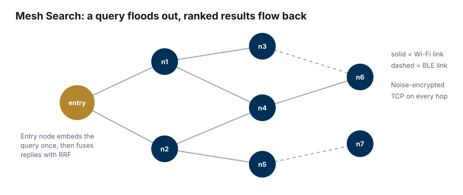
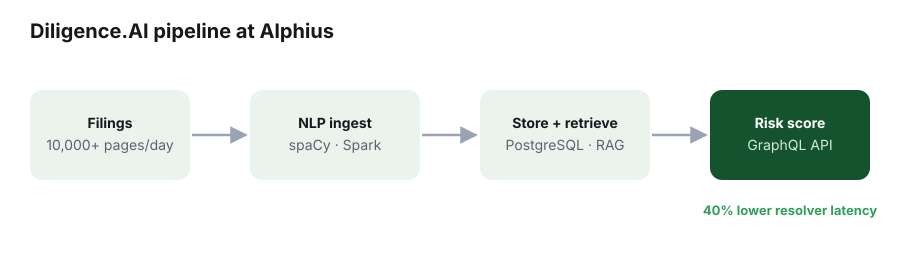
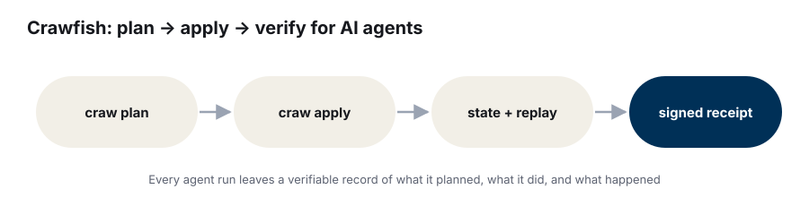

Portfolio
Projects
Things I've built, newest first. Each one starts with a problem I wanted to understand better.
Featured · ECE 1100 Discovery Project
On-Device Gesture Recognition with an ESP32-S3
A microcontroller that recognizes hand gestures with a tiny ML model running on the chip itself, no cloud required.
ESP32-S3FreeRTOSI2CTinyMLMesh Search
A distributed search engine in Rust that runs across a mesh of nodes connected by simulated Wi-Fi and Bluetooth links. A question goes in at any node and floods outward hop by hop. Each node searches its own documents and sends back only its best matches, so documents never leave the device they live on. The entry node merges everyone's results with reciprocal rank fusion. Every link is encrypted with the Noise protocol, and if the coordinating node dies, the rest elect a new one in about five to seven seconds.
RustTCPNoise encryptionLeader election
Diligence.AI at Alphius
Private equity teams spend weeks reading filings before a deal. I built the engine that does a first pass for them. It ingests over 10,000 pages of filings per day with spaCy and Spark, stores and retrieves them from PostgreSQL, and serves a risk score through a GraphQL API. Adding caching cut resolver latency by 40% under production load.
PythonSparkPostgreSQLAzure
Crawfish
An open-source framework for running AI agents the way Terraform runs infrastructure. You plan, review, and apply. Every run leaves a signed receipt that records what the agent was allowed to do, what it did, and what happened, so you can replay and audit it later. I co-build it with Neal Kotval.
TypeScriptNode.jsMCP
More projects
Redis Clone with Vector Search
An in-memory vector store in C++17 with an epoll event loop, a custom hash map, and KNN search. int8 quantization cut memory per vector 4x.
LLM Infrastructure Home Lab
A self-hosted GPU server running local models at 45 tokens/s for 5 users on Kubernetes, monitored with Prometheus and Grafana.
Legicycle
An AI-native platform for tracking and analyzing Georgia legislation, with a bill tracker and a research assistant called Clarity.
Inflect
Hackathon project: webcam gaze tracking plus a single facial switch so people with ALS or paralysis can control a computer and speak.